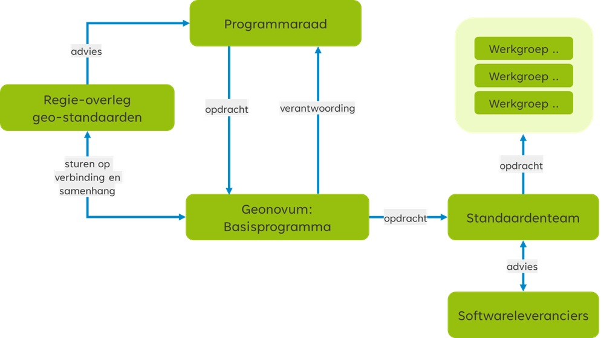

Open geo-standaarden zorgen ervoor dat geo-informatie betekenisvol voor diverse taken en in verschillende softwarepakketten te gebruiken is. Geonovum ontwikkelt en beheert de Nederlandse basisset van geo-standaarden voor het vindbaar, toegankelijk, uitwisselbaar en herbruikbaar maken van geo-informatie. Mensen die in de praktijk werken met de geo-standaarden hebben vragen over de toepassing ervan, willen weten welke ontwikkelingen spelen, en hebben mogelijk suggesties voor aanpassingen van de basisset geo-standaarden.
Dit wijzigingsprotocol geeft inzicht in het wijzigingsproces, evenals de belangrijkste taken en verantwoordelijkheden van de betrokkenen (gebruikers en ketenpartners) bij het onderhouden en gebruiken van de geo-standaarden. De gebruikers en ketenpartners worden op diverse momenten betrokken in dit proces. In dit protocol beschrijven we één onderdeel van het beheer: de manier waarop de wijzigingen van een basis geo-standaard plaatsvinden. Dit wijzigingsprotocol is dan ook alleen van toepassing op de basisset geo-standaarden, voor zover die bij Geonovum in beheer zijn.
Dit wijzigingsprotocol is niet van toepassing op de domeinstandaarden die Geonovum in beheer heeft. Iedere domeinstandaard in beheer bij Geonovum heeft een eigen wijzigingsprotocol of zou dit moeten hebben. Deze zijn beschikbaar via de Geonovum website. Het wijzigingsprotocol voor de basisset geo-standaarden geldt als het generieke wijzigingsprotocol. Andere wijzigingsprotocollen dienen hiervan te worden afgeleid en hiermee in lijn te zijn.
In het beheerplan geo-standaarden zijn de verschillende beheeraspecten voor de basisset geo-standaarden beschreven zoals implementatieondersteuning, wijzigingsproces, governance, etc. zodat iedere organisatie die de basisset geo-standaarden gebruikt hun weg weten te vinden in de geo-standaarden.
Status van dit document
Dit is een consultatieversie.
Versiebeheer
Dit document is aan verandering onderhevig. Het versiebeheer van het document geeft inzicht in wijzigen en de actualiteit ervan.
Versie
Datum
Status
Toelichting
1.0
Augustus 2018
Vervallen
Aanbieden aan Programmaraad ter vaststelling. Door Programmaraad ter advisering aan Regieoverleg overgedragen.
1.1
Juni 2019
Vervallen
Opmerkingen Regieoverleg verwerkt en opnieuw aangeboden aan Regieoverleg. Belangrijkste wijzigingen: X-wijz. max 1x per 3 jaar, Y-wijz. max 1x per jaar, Z-wijz. z.s.m. Verder formuleringen aangescherpt over rol NEN bij NEN3610, OGC bij GML en Forum bij toekennen PTOLU-status aan standaarden. Aanbieden aan Programmaraad ter vaststelling.
De wijzigingen zijn: Paragraaf 1.1 van introductie hernoemd naar samenvatting; uitbreiding van de begrippenlijst in paragraaf 1.3; paragraaf Fasen en resultaten is verplaatst van hoofdstuk 2 naar hoofdstuk 3 en hernoemd naar Fasen in het wijzigingsproces; aan
paragraaf 2.2 zijn de sturende principes voor consultatie toegevoegd; de rol van de het Regie-overleg geo-standaarden is toegevoegd in het wijzigingsproces; paragraaf 3.2 is zowel het proces als de figuur geactualiseerd; het hoofdstuk Tussentijdse werkafspraken is toegevoegd als hoofdstuk 4; in hoofdstuk 6 is een verwijzing toegevoegd naar het beheerplan geo-standaarden met betrekking tot de klachten over standaarden in plaats van klachten over het wijzigingsproces; overzicht status van wijzigingsverzoeken in hoofdstuk 7 is geactualiseerd; verder tekstuele aanpassingen en correcties.
1. Inleiding
1.1 Waarom een wijzigingsprotocol
In dit wijzigingsprotocol staan de sturende principes achter het wijzigingsproces voor de standaarden in de basisset geo-standaarden; de manier waarop wijzigingen in geo-standaarden plaatsvinden in afstemming met de gebruikers en ketenpartners. Met het protocol wordt elke wijziging van de standaard een voorspelbaar en transparant proces voor de gebruikers van de geo-standaarden. In het protocol zijn basisbegrippen en uitgangspunten uiteengezet voor het wijzigingsproces, bijvoorbeeld wat onder nieuwe en volgende versies van de standaard verstaan wordt en wanneer deze nieuwe versie(s) verwacht mogen worden. Tevens is een processchema uitgewerkt, dat invulling geeft aan de stappen die de gebruikers en ketenpartners met elkaar doorlopen om tot een wijziging van de geo-standaarden te komen.
1.2 Begrippen
Begrip
Uitleg
Basisset geo-standaarden
De basisset geo-standaarden bevat de domein overstijgende standaarden die nodig zijn om de Nederlandse geo-informatie infrastructuur goed te laten functioneren.
Basisprogramma Standaardisatie & Innovatie
Het beheer en de doorontwikkeling van de set geo-standaarden is een basistaak van Geonovum en is belegd in basisprogramma Standaardisatie & Innovatie.
Geo-standaard
Standaard uit de basisset geo-standaarden die is opgenomen op de ‘Pas toe of leg uit’ -standaarden lijst van het Forum Standaardisatie.
Programmaraad
De Programmaraad van Geonovum adviseert het bestuur van Geonovum over de inhoud en prioriteiten voor het basisprogramma en over onze andere werkzaamheden. De Programmaraad treedt op als stuurgroep voor het basisprogramma. De Programmaraad beoordeelt en besluit over wijzigingsvoorstellen en stelt een nieuwe (versie) van de geo-standaarden vast die bij Geonovum in beheer zijn. Ook is de Programmaraad aanspreekpunt voor klachten over het beheer van de standaarden door Geonovum. De Programmaraad bestaat uit vertegenwoordigers van publieke organisaties in het geo-werkveld. Zij zijn de voornaamste belanghebbenden van Geonovum.
Regie-overleg geo-standaarden
Het Regie-overleg geo-standaarden richt zich op het borgen en vergroten van de samenhang tussen de standaarden in de set geo-standaarden en brengt daarover advies uit aan de Programmaraad.
Standaardenteam
Binnen Geonovum het team van adviseurs dat werkt aan de uitvoering van het basisprogramma Standaardisatie & Innovatie.
Wijzigingsprotocol
Hiermee wordt het geheel van vastgelegde regels en afspraken voor het wijzigen van de standaard vastgelegd.
Wijzigingsproces
Het wijzigingsproces is de daadwerkelijke wijziging van de geo-standaard op een bepaald moment. Het volledige wijzigingsproces doorloopt de fasen van het wijzigingsprotocol met een datum van inwerkingtreding van de nieuwe versie van de geo-standaard.
Wijzigingsverzoek
Wijzigingsverzoeken zijn wensen of eisen voor aanpassing van de geo-standaard. wordt door een gebruiker van de standaard ingediend bij Geonovum. Het wijzigingsverzoek wordt door het standaardenteam van Geonovum beoordeeld, ingeschat en aan de wensen- en eisenlijst toegevoegd, die inclusief status inzichtelijk is via de Geonovum website. Een wijzigingsverzoek dat niet wordt ingewilligd, wordt beargumenteerd afgewezen.
Wijzigingsvoorstel
In het wijzigingsproces worden meerdere wijzigingsverzoeken meegenomen en gebundeld tot één wijzigingsvoorstel voor het wijzigen van de standaard en de bijkomende beheerobjecten.
2. Gebruik van het wijzigingsprotocol
Het wijzigingsprotocol schrijft een vast stramien voor het wijzigen van de standaard voor. Het protocol benoemt de fasen en de op te leveren resultaten. Belangrijk zijn de randvoorwaarden en uitgangspunten. De gebruikers en ketenpartners van de geo-standaarden worden bij het wijzigen van de standaard nauw betrokken.
2.1 Protocol versus proces
De titel van dit document geeft aan dat het hier om een protocol gaat. Toch wordt in dit document ook gesproken over processen. Een wijzigingsprotocol beschrijft de manier waarop wijzigingen in de basisset geo-standaarden plaatsvinden: het wijzigingsproces. In het protocol zijn basisbegrippen en uitgangspunten uiteengezet voor het wijzigingsproces, bijvoorbeeld wat onder nieuwe en volgende versies verstaan wordt en wanneer deze verwacht mogen worden. De daadwerkelijke planning van een nieuwe versie is op hoofdlijnen uitgewerkt in de standaardenagenda, en meer in detail in de tijdens de kwartaalplanning uitgewerkt. Deze standaardenagenda zal nog worden vertaald naar een roadmap, waarin voor de komende jaren de verdere ontwikkeling en de uitfasering van de (verschillende versies van de) standaarden wordt getoond.
Met behulp van een wijzigingsprotocol voor de basisset geo-standaarden geeft Geonovum:
inzicht in het behandel- en besluitproces dat ten grondslag ligt aan het versiebeheer;
inzicht in de aangeboden wijzigingsvoorstellen;
stabiliteit aan de standaard;
continuïteit aan de standaard;
een eenduidige aanpak.
De stabiliteit en continuïteit van de standaard maken wij inzichtelijk met het jaarplan voor standaardisatie en innovatie. Hierin staan de activiteiten die wij uitvoeren om de interoperabiliteit binnen onze nationale geodata infrastructuur (NGII) te borgen en de innovaties die wij in dit kader verkennen.
2.2 Releasebeleid
In deze paragraaf gaan we in op het releasebeleid van Geonovum. Dit beleid passen wij toe op de basisset geo-standaarden die in beheer is bij Geonovum. Concreet gaat het om het releasebeleid voor de Metadata-profielen voor geografie en webservices. Voor GML, GeoPackage, OGC API Features en OGC API Tiles geldt dat deze standaarden worden beheerd door OGC en het beleid en procedures van de Technische Commissie van de OGC wordt toegepast. Voor het Basismodel Geo-informatie (NEN 3610) geldt dat de Programmaraad de nieuwe versie van NEN 3610 niet vaststelt, maar keurt hem goed (of af) en draagt deze vervolgens voor aan de NEN normcommissie 351 240 Geo-informatie. Deze commissie verzorgt de openbare consultatie en stelt deze geo-standaard formeel vast.
Een release van een standaard is een nieuwe uitgave van de standaard. De nieuwe release kenmerkt zich ten opzichte van de oude versie door een hoger versienummer. Een release betreft 1 product van een standaard of is een bundel van meerdere producten van de betreffende standaard. Bij de release is ieder product voorzien van een nieuw versienummer conform X.Y.Z schrijfwijze (zie paragraaf 2.2.1) en een status. Een voorbeeld van een bundel is de nieuwe uitgave van een informatiemodel, een schema (bijvoorbeeld .xsd of .json), een schematron (.sch) en een praktijkrichtlijn.
We werken aan een nieuwe uitgave van een product van de standaard op GitHub. Bij een release wordt de nieuwe versie van het product/ de bundel van producten opgeleverd en gepubliceerd van GitHub naar een van de volgende Geonovum publicatieservers. Welke publicatieserver is afhankelijk van het type product.
Ontsluiting breed naar ons netwerk vindt vervolgens altijd plaats via de Geonovum website op de geo-standaarden pagina en nieuwsbrieven. Op de Geonovum website verwijzen we voor het raadplegen en downloaden van de nieuwe uitgave altijd naar de bronlocatie: onze publicatieservers.
2.2.1 Nieuwe versie van de standaard
Elk product van onze standaarden is altijd voorzien van een versienummer. Bij het aanpassen van dat product, wijzigt het versienummer. De grootte van de wijzigingen (major, minor, patch ofwel X,Y,Z wijzigingen) heeft gevolg voor de implementatie van de standaard en wordt uitgedrukt in de versienummering. Hierbij wordt de ‘Semantic Versioning’ (SemVer) methodiek aangehouden.
We hanteren drie typen versies voor een wijziging van een standaard. Bijvoorbeeld: versie 2.1.0 (=X.Y.Z):
X-wijzigingen Dit zijn grote (major) wijzigingen van de standaard die niet backwards compatible zijn.
Y-wijzigingen Dit zijn wijzigingen die wel backwards compatible zijn.
Z-wijzigingen Dit zijn in feite oplossingen van technische fouten of verbeteringen van technische aard, alsmede tekstuele verbeteringen. Deze wijzigingen zijn backwards compatible.
2.2.2 Consultatie
Met (door)ontwikkelen van een standaard leveren wij nieuwe versies van de producten van de standaard op. Doel van een consultatie is ons netwerk, de gebruikers van de standaard en de ketenpartners te raadplegen; wij vragen hen om advies, zodat de standaard zo goed mogelijk aansluit op de werkprocessen van de eindgebruikers van de standaarden.
De consultaties zijn openbaar/ publiek en daardoor mag iedereen reageren op de nieuwe versie. Consultaties duren minimaal 3 weken en maximaal 8 weken. Bekendmaking gebeurt via de Geonovum website door middel van een nieuwsbericht. We attenderen de gebruikers en de ketenpartners via onze nieuwsbrief de Geo-standaard (inschrijving daarvoor vindt plaats via de Geonovum website).
Wanneer en hoe lang een consultatie plaatst vindt, is afhankelijk van proces varianten bij wijzigingen (zie paragraaf 2.3).
2.2.3 Oudere versie van een standaard
De SemVer-methodiek schrijft backwards compatibility voor op het Y-niveau. Na het uitbrengen van een nieuwe versie van een bij Geonovum in beheer zijnde standaard blijven oudere versies beschikbaar en zijn vindbaar via de Geonovum website. Een nieuwe versie dwingt daarmee geen directe overstap af bij de gebruikers, tenzij anders (bijvoorbeeld wettelijk) bepaald. Na het uitbrengen van de nieuwe versie van een standaard wordt de ontwikkeling van de oude versie stopgezet.
Voor het onderhoud en de ondersteuning van een oude versie van een standaard gelden de volgende uitgangspunten:
Aan een oude versie worden geen nieuwe features toegevoegd, geen aanpassingen gedaan op X en Y niveau na het uitbrengen van een nieuwe versie. Verzoeken om aanpassing en wijziging voor nieuwe functionaliteit worden niet meer voor de oude standaard in behandeling genomen maar doorgegeven aan het ontwikkelteam. Correcties (Z-wijzigingen) worden wel uitgevoerd op de vorige versies zolang deze nog ondersteund worden.
Bij oplevering van een nieuwe versie wordt de voorgaande versie nog een vooraf vastgestelde periode ondersteund. De duur van de overgangsperiode wordt mede bepaald door de omvang van de wijzigingen (X, Y en Z wijzigingen op de vorige versies), de staat van ontwikkeling van de standaard en of de standaard in voorlopig dan wel permanent beheer is.
Oudere versies van (producten van) de standaard moeten voor onbepaalde tijd beschikbaar blijven via onze publicatie registers via de url’s zoals ze gepubliceerd.
2.3 Proces varianten bij wijzigingen
In paragraaf 2.2 zijn de X, Y en Z wijzigingen uitgelegd. Voor wijzigingen kent Geonovum twee proces varianten. Eén voor X en Y wijzigingen en één voor Z wijzigingen.
Proces voor X en Y wijzigingen:
Deze vergen volledige afstemming en het doorlopen van alle in paragraaf 2.4 beschreven fasen: Inhoud, Toetsing, Besluitvorming en Implementatie. Voor de inhoudelijke fase wordt een werkgroep gestart met daarin vertegenwoordiging van belangrijke gebruikers en ketenpartners van de betreffende standaard. Het resultaat van de werkgroep wordt in een openbare consultatie getoetst. Nadat het Regie-overleg geo-standaarden is gevraagd te adviseren over de wijziging, vindt besluitvorming over vaststelling van de geo-standaard plaats in de Programmaraad van Geonovum. Indien nodig wordt met softwareleveranciers een convenant afgesloten of een bestaand convenant uitgebreid, waarin wordt afgesproken dat zij (onderdelen van) de standaard gaan ondersteunen.
Proces voor Z wijzigingen:
Deze dienen zo snel als mogelijk uitgevoerd te worden. De inhoudelijke fase wordt door een medewerker van Geonovum gedaan. Toetsing vindt plaats door middel van een (beperkte) consultatie in het standaardenteam van Geonovum en met gebruikers en ketenpartners. Besluitvorming vindt plaats door het standaardenteam van Geonovum met een notificatie van de wijziging aan de Programmaraad. Implementatie vindt plaats door het publiceren van de wijziging op de website van Geonovum.
2.4 Betrokkenen
De volgende groepen van gebruikers en ketenpartners zijn betrokken bij het wijzigingsproces van een geo-standaard:
Programmaraad van Geonovum;
Regie-overleg geo-standaarden;
Werkgroepen;
Standaardenteam;
Softwareleveranciers;
Forum Standaardisatie.

Figuur 1Betrokkenen bij wijzigingen van geo-standaarden
Programmaraad:
Bij het vaststellen van een nieuwe versie (X, Y) van de Metadata-profielen voor geografie en webservices stelt de Programmaraad met advies van Geonovum vast hoelang een oude versie wordt ondersteund en wanneer een oude versie komt te vervallen. Het vaststellen van Z-wijzigingen, zie paragraaf 2.2.3 wordt door Geonovum zelf uitgevoerd zonder tussenkomst van de Programmaraad van Geonovum.
Regie-overleg geo-standaarden:
Het Regie-overleg geo-standaarden richt zich op het borgen en vergroten van de samenhang tussen de standaarden in de set geo-standaarden. Dit gaat om de basisset geo-standaarden zoals die geplaatst is op de ‘Pas toe of leg uit’ -standaarden lijst van het Forum Standaardisatie en de domeinstandaarden, die gebaseerd zijn op het basismodel voor geo-informatie NEN 3610.
Het Regie-overleg geo-standaarden:
is domein-overstijgend;
is gevuld met beheerders van de domeinstandaarden die gebaseerd zijn op NEN 3610;
is tactisch op de inhoud om de verbinding met de geo-standaarden te leggen;
is aanvullend op/ aan de bestaande gremia.
Het Regie-overleg geo-standaarden gaat nadrukkelijk niet over de governance van domeinstandaarden. Wanneer vanuit samenhang de behoefte aan besluitvorming ontstaat bij een individuele domeinstandaard, dan brengt de beheerder dit in de governance van de domeinstandaard in.
Het Regie-overleg geo-standaarden heeft voornamelijk een faciliterende rol, waarbij de focus ligt op het ondersteunen van verbindingen tussen verschillende partijen op het gebied van geo-standaarden. Het overleg heeft een informerende, signalerende en adviserende functie ten opzichte van de Programmaraad, maar neemt zelf geen besluiten – de Programmaraad van Geonovum besluit.
Standaardenteam:
Het beheer en de doorontwikkeling van de set geo-standaarden is een basistaak van Geonovum en is belegd in basisprogramma Standaardisatie & Innovatie. Het standaardenteam is het team van adviseurs dat samen met de werkgroep(en) werkt aan de nieuwe versie van de geo-standaard.
Werkgroep en softwareleveranciers:
Nieuwe versies van een geo-standaard bereidt het standaardenteam van Geonovum voor in samenwerking met de werkgroep(en) met daarin gebruikers en/of softwareleveranciers. We streven naar een unanieme instemming met de standaard. Dit versterkt het draagvlak en zorgt voor een betere implementatie van de geo-standaard in het werkveld.
Forum Standaardisatie:
Het Forum Standaardisatie adviseert de Nederlandse overheid over het gebruik van open standaarden. Het Forum Standaardisatie voert het beheer over twee lijsten, namelijk de lijst met verplichte open standaarden voor ‘pas toe of leg uit’ en een lijst met aanbevolen open standaarden.
Voor de standaarden op de ‘pas toe of leg uit’ lijst met open standaarden geldt dat (semi-) publieke organisaties het 'pas toe of leg uit'-principe moeten volgen. De basisset geo-standaarden staat op de ‘Pas toe of leg uit’ -standaarden lijst van het Forum Standaardisatie. Organisatorisch bestaat er geen formele relatie tussen de Programmaraad en het Forum Standaardisatie. De Programmaraad van Geonovum stelt (versies van) geo-standaarden vast (voor zover dat niet in de governancestructuur van NEN of OGC gebeurt); het Forum Standaardisatie besluit uiteindelijk of die vastgestelde (versies van) geo-standaarden ook de status krijgen die behoort bij opname op de Pas toe of leg uit -standaarden lijst (de verplichting voor overheden om die standaarden uit te vragen bij aanbestedingen).
Geonovum heeft het predicaat uitstekend beheer voor de huidige standaarden (NEN 3610, GML, serviceprofielen en metadataprofielen) in de basisset geo-standaarden. Dit betekent dat Geonovum het beheer en versiebeheer van die geo-standaarden zodanig open en structureel heeft vormgegeven, dat het Forum erop vertrouwt dat alle mogelijke belangen die spelen rondom de standaarden correct zijn meegenomen en afgewogen door Geonovum bij de totstandkoming van de nieuwe versie van de standaard. Op het moment dat Geonovum (of een andere partij) een nieuwe versie van een basis geo-standaard aanmeldt, wordt deze door het Forum in de regel na een veel lichtere procedure opgenomen.
Geonovum kondigt consultaties over de basis geo-standaarden aan bij Bureau Forum Standaardisatie, zodat zij hierover kan berichten op haar website of twitterkanaal.
3. Wijzigingsproces
De basis onder ons standaardisatiewerk is het afstemmen van deze standaarden met zowel internationale als nationale standaardisatie organisaties. Geonovum is lid van de internationale standaardisatie organisaties OGC en W3C en wij nemen actief deel aan verschillende werkgroepen. Geonovum levert de voorzitter van de NEN Normcommissie 351 240 voor Geo-informatie van waaruit we ook deelnemen in het Europese ISO. Het afstemwerk dat we in al deze organisaties doen, is gericht op het borgen van vindbaarheid, toegankelijkheid, uitwisselbaarheid en herbruikbaarheid van geodata onderling en met andere databronnen. Bovendien kunnen we er zo voor zorgen dat de standaarden die we in Nederland toepassen, mee blijven bewegen met technologische innovaties en internationale ontwikkelingen.
De aanleiding voor een wijzigingsproces is gebaseerd op meldingen: de wensen en gevonden fouten in de geo-standaard, die aanleiding zijn om de standaard te vernieuwen. Samen vormen zij het wijzigingsvoorstel. Geonovum neemt als beheerder het initiatief om een wijzigingsproces te starten.
3.1 Fasen in het wijzigingsproces
Het volledige wijzigingsproces doorloopt de fasen Inhoud, Toetsing, Besluitvorming en Implementatie, zoals weergegeven in onderstaand figuur.
Inhoud:
In de fase Inhoud wordt voor iedere melding bepaald of deze wordt opgenomen in de nieuwe versie van de standaard of niet. Dit wordt vastgelegd met behulp van GitHub of een andere issue tracker en is zichtbaar via de website van Geonovum. Voor meldingen die worden meegenomen in de nieuwe versie van de standaard, worden oplossingen uitgewerkt, op basis waarvan vervolgens de specificatie wordt aangepast. Dit gebeurt door Geonovum in samenwerking met inhoudelijke experts. Afhankelijk van de omvang van de wijziging ten opzichte van de voorgaande versie is de groep van experts evenredig groter of kleiner.
Toetsing:
De fase Toetsing vormt een brug tussen de inhoud, besluitvorming en de implementatie. In deze fase wordt eenieder (X, Y wijziging) of een beperkte groep belanghebbenden (Z wijziging) uitgenodigd om zijn visie te geven op de nieuwe versie van de standaard. De reacties uit de consultatie worden verwerkt in de specificatie. In het geval van een X of Y wijziging wordt de nieuw voorgestelde versie voorgelegd aan het Regie-overleg met het verzoek advies uit te brengen aan de Programmaraad van Geonovum (zie paragraaf 3.2).
Besluitvorming:
Bij Besluitvorming wordt besloten om de gewijzigde specificatie vast te stellen en te publiceren. Afhankelijk van het type wijziging en de betreffende geo-standaard (X, Y of Z, zie paragraaf 2.3) besluit de Programmaraad van Geonovum dan wel het standaardenteam van Geonovum. Eenmaal vastgesteld en gepubliceerd, wordt de nieuwe versie van de standaard door Geonovum aangemeld bij het Forum Standaardisatie.
Implementatie:
Het in gebruik nemen van de geo-standaard in de praktijk staat centraal in deze fase. Hiervoor leveren we verschillende technische bestanden op, zoals implementatiebestanden, voorbeeldbestanden en voorbeeldberichten. Deze bestanden ondersteunen softwareleveranciers en gebruikers van de geo-standaard bij de implementatie van de standaard in hun software. Beheerders van de voorziening/ het register e.d. nemen de geo-standaard over. Daarnaast stelt Geonovum validators beschikbaar, waarmee de technische juistheid van de implementatie van standaarden kan worden getoetst. Wij ondersteunen de implementatie bovendien door de werking van de geo-standaard toe te lichten met behulp van handreikingen en wegwijzers. Resultaat van deze fase is dat de gebruikers data kunnen maken en uitwisselen conform de nieuwe standaard. In hoofdstuk 5 wordt dit verder toegelicht.
3.2 Inzicht in het wijzigingsproces
De meldingen en wijzigingsverzoeken alsook (inter)nationale ontwikkelingen geven aanleiding tot de verdere ontwikkeling voor een geo-standaard. Het wijzigingsproces doorloopt de fasen zoals geschetst in paragraaf 3.1.
In figuur 3 ‘Wijzigingen doorvoeren in de geo-standaarden’ is het proces voor X en Y wijzigingen weergegeven. Het standaardenteam kan 1 of meerdere werkgroepen samenstellen. De werkgroep onderzoekt de wijzigingsverzoeken en werkt aan een nieuwe versie van de geo-standaard door dit vast te leggen in een wijzigingsvoorstel. Het standaardenteam vraagt ook aan softwareleveranciers advies over de wijzigingsverzoeken en de wijze waarop deze in de nieuwe versie worden verwerkt. Na consultatie van het wijzigingsvoorstel (zie paragraaf 2.2.2) legt het standaardenteam het voorstel voor aan het Regie-overleg geo-standaarden. Op basis van het advies van het Regie-overleg geo-standaarden besluit de Programmaraad van Geonovum over het wijzigingsvoorstel.
Bij het vaststellen van een nieuwe versie van een standaard stelt de Programmaraad met advies van Geonovum vast hoelang een oude versie van de geo-standaard wordt ondersteund en wanneer een oude versie komt te vervallen. Een uitzondering hierop is het Basismodel Geo-informatie (NEN 3610). Ook nieuwe versies van deze standaard bereidt Geonovum voor in samenwerking met werkgroepen. De programmaraad stelt de nieuwe versie niet vast, maar keurt hem goed (of af) en draagt deze vervolgens voor aan de NEN normcommissie 351 240 Geo-informatie. Deze commissie verzorgt de openbare consultatie en stelt de standaard formeel vast. De Programmaraad beslist, op advies van Geonovum, of zij een vastgestelde standaard voordraagt voor opname op de ‘Pas toe of leg uit’ -standaarden lijst van het Forum Standaardisatie. Bij een positief besluit verzorgt Geonovum de voordracht bij het Forum Standaardisatie. Organisatorisch bestaat er geen formele relatie tussen de Programmaraad en het Forum Standaardisatie, inhoudelijk dus wel.
4. Tussentijdse werkafspraken
Het toepassen van een geo-standaard roept soms vragen op. Bij onduidelijkheden, discrepanties of fouten in de standaard kunnen in de praktijk vragen ontstaan over hoe de standaard – in afwachting van een formele wijziging– toe te passen. Met name bij een X wijziging van de standaard, die een grote impact op toepassing in de praktijk heeft, zullen geconstateerde fouten of gewenste wijzigingen in de regel niet heel snel worden doorgevoerd. Een tussentijds gebruiksadvies wordt dan opgesteld in de vorm van een tussentijdse werkafspraak. In dit hoofdstuk wordt het maken van werkafspraken toegelicht.
Als er een fout of probleem wordt geconstateerd, gaat er doorgaans altijd enige tijd overheen voordat de fout of het probleem wordt hersteld in de nieuwe geo-standaard. Typische voorbeelden van dit soort fouten of problemen zijn in algemene zin:
In de geo-standaard zijn bepaalde technische vrijheden mogelijk die op grond van een goede praktijk niet zouden moeten worden benut;
In de geo-standaard is iets wel mogelijk, maar niet verplicht, terwijl dit wel sterk gewenst is.
In dit soort gevallen zal het beheer na consultatie een werkafspraak publiceren over hoe in afwachting van de wijziging (een reparatie) van de geo-standaard moet worden omgegaan met een geconstateerde fout of probleem. Zo’n werkafspraak heeft de formele status van een advies van het beheer aan de gebruikers van de geo-standaard. De tussentijdse werkafspraak vervangt niet de in gebruik zijnde versie van geo-standaard (de vastgestelde versie), maar geldt wel als werkwijze in afwachting van de nieuwe versie van de geo-standaard (na reparatie).
Voor bovengenoemde voorbeelden zouden de werkafspraken resp. als volgt kunnen zijn:
Gebruik nooit de mogelijkheid A die de geo-standaard biedt;
Doe het altijd op manier B.
De status van deze werkafspraken is als volgt:
De tussentijdse werkafspraken zijn van toepassing totdat de wijzigingen in werking zijn getreden, daarna zijn de werkafspraken niet meer van toepassing;
Indien mogelijk zijn de werkafspraken altijd een directe voorloper van de wijzigingen zelf die zullen worden doorgevoerd;
Binnen het wijzigingsbeheer worden alleen werkafspraken gemaakt, die vooruitlopen op daadwerkelijk aanstaande wijzigingen. Er worden binnen dit kader geen permanente werkafspraken gemaakt die niet verankerd zullen worden in de geo-standaard;
Het toepassen van de werkafspraken is (van rechtswege) niet verplicht, maar geeft duidelijkheid en richting bij implementatie door softwareleveranciers;
Het toepassen van de werkafspraken vergemakkelijkt de implementatie van wijzigingen, omdat het een al een voorbereidende werkwijze is voor het ander;
Gegevens, die niet voldoen aan de werkafspraken, zullen niet worden afgekeurd door een validator gebaseerd op de geo-standaard. Eventueel kan wel een waarschuwing of andersoortige melding worden gegeven over de geconstateerde afwijking van de werkafspraak.
5. Implementatie ondersteuning
Het in gebruik nemen van (een volgende versie van ) een geo-standaard staat centraal in deze fase. Hiervoor leveren we de verschillende implementatiebestanden op. Wij ondersteunen de implementatie met onder meer een helpdesk en een validator.
5.1 Technische bestanden
Om softwareleveranciers en gebruikers te ondersteunen bij de implementatie van een nieuwe versie van de geo-standaard, leveren wij afhankelijk van de behoefte in de praktijk verschillende bestanden en documentatie op:
Implementatiebestanden;
Voorbeeldbestanden;
Voorbeeldberichten.
Schema’s en Schematron (validatieregels) zijn voorbeelden van implementatiebestanden die als onderdeel van standaarden door Geonovum worden opgeleverd. Het kan hier ook gaan om implementatiebestanden voor visualisatieregels en iconen.
Voorbeeldbestanden en voorbeeldberichten kunnen worden gebruikt voor het testen van applicaties.
5.2 Validatie en certificatie
Na het opleveren van de nieuwe standaard inclusief de verschillende onderdelen, richten wij ons op de ondersteuning van de standaard door softwareleveranciers en beheerders van voorzieningen/ registers. Bij deze groep gebruikers is de ondersteuning vooral technisch van aard. De linter of validator is het hulpmiddel bij uitstek hierbij. Geonovum biedt waar dit wenselijk is linters of validators aan waarmee ontwikkelaars tijdens het schrijven van hun code, danwel achteraf, kunnen controleren of hun software voldoet aan de standaarden.
Soms zetten we conformiteitstoetsing in zoals bij NEN 3610. In dat geval wordt een testprotocol voor een conformiteitstoets beschikbaar gesteld, waarmee (handmatig) kan worden gecontroleerd of een implementatie aan de norm voldoet.
Ook certificering van applicaties is mogelijk. Certificering van applicaties ondersteunt niet zozeer de (kwaliteit van de) implementatie van de standaarden, als wel de (snelheid van) adoptie ervan. Zodra het werkveld voldoende volwassen is en certificering niet meer nodig is om adoptie te versnellen, kan certificering komen te vervallen.
5.3 Opleiding
Opleiding en advies kunnen van toegevoegde waarde zijn bij de ondersteuning van de gebruikers die de geo-standaarden gebruiken. Middelen als documentatie, (online) bijeenkomsten, workshops, pilots en hackatons worden ingezet om de kennis over de wijzigingen in de versie van nieuwe geo-standaard te delen en te ondersteunen bij het in gebruik nemen van de nieuwe versie van de standaard.
5.4 Communicatie
Het hele wijzigingsproces staat of valt met een goede communicatie. Onder goede communicatie wordt verstaan het tijdig leveren van de juiste informatie aan de juiste belanghebbenden. Dit betreft zowel de proceskant alsook de producten die er worden opgeleverd.
Website(s):
De actuele vigerende versies van de basisset geo-standaarden zijn beschikbaar en raadpleegbaar via de Geonovum website.
Consultatie:
Bij X-wijzigingen van de Metadata-profielen voor geografie en webservices zal Geonovum de aanpassingen in het model in een publieke consultatie aan eenieder voorleggen (zie paragraaf 2.2.2). In het geval van GML, GeoPackage, OGC API Features en OGC API Tiles doet OGC een consultatie. Geonovum attendeert in dat geval het Nederlandse werkveld via de Geonovum website.
Werkafspraken:
De werkafspraken bepalen hoe er in de tussentijd moet worden omgegaan met geconstateerde fouten en problemen (zie Hoofdstuk 4). De werkafspraken publiceren wij via de Geonovum website. Door middel van nieuwsberichten op de website en het versturen van de nieuwsbrief De Geo-standaard informeren wij het werkveld over de nieuwe dan wel aangepaste werkafspraak.
Nieuwe producten inclusief releasenotes:
In de releasenotes bij de geo-standaard beschrijven wij de wijzigingen in de geo-standaard. De relasenotes worden in de bijlage van de nieuwe versie van de geo-standaarden opgenomen.
6. Escalatie- en klachtenprocedure
In voorgaande hoofdstukken gaat het protocol ervan uit dat er wijzigingen "in vrijheid" worden doorgevoerd. In het primaire proces wordt geen rekening gehouden met noodzakelijke wijzigingen die met spoed of onder druk van bijvoorbeeld externe nieuwe regelgeving moeten worden doorgevoerd. Dit is mogelijk middels een escalatieprocedure.
We doorlopen een escalatieprocedure als er een wijziging van de standaard noodzakelijk is die niet in het reguliere wijzigingsproces doorgevoerd kan worden, omdat dit te lang duurt. Een uitputtende lijst met situaties en criteria wanneer dit van toepassing is, valt op voorhand niet te geven. Maar voor de beeldvorming: het gaat om situaties waarbij het niet doorvoeren van een bepaalde noodzakelijke wijziging leidt tot onaanvaardbare risico's voor de uitvoeringspraktijk of het onmogelijk uitvoeren (vanwege bijvoorbeeld tegenstrijdige wetten) van werkzaamheden.
De escalatieprocedure wordt niet gebruikt om reguliere wijzigingen sneller door te kunnen voeren.
6.1 Sturende principes bij escalatie
Er wordt geen vast proces gegeven om de escalatieprocedure te doorlopen, omdat verschillende situaties wellicht tot een verschillende wijze van handelen moeten leiden. In plaats daarvan zijn onderstaande sturende principes leidend om verantwoordelijkheden bij escalatie te duiden.
Signalering:
Uit het werkveld kunnen signalen ontstaan dat er met spoed iets gewijzigd zou moeten worden. Het is vooraf niet aan te geven uit welke kanalen deze geluiden zullen ontstaan. Het is wel van belang om de rol van Geonovum te onderkennen als antennefunctie voor het werkveld. In ieder geval zullen deze signalen op enig moment Geonovum bereiken, en op dat moment zal er overleg gevoerd worden over deze signalen.
Overleg:
Bij de besluitvorming binnen de escalatieprocedure wordt er in principe overleg gevoerd tussen de Programmaraad en Geonovum (standaardenteam). Beide partijen raadplegen de betrokkenen daar waar nodig.
Besluitvorming:
De beoordeling of de escalatieprocedure van toepassing is, wordt genomen door de voorzitter van Programmaraad van Geonovum. Ook het besluit welke wijzigingen er precies doorgevoerd moeten worden en op welke manier, wordt genomen door de voorzitter van Programmaraad.
Coördinatie:
De coördinatie tijdens de escalatieprocedure wordt uitgevoerd door de voorzitter van Programmaraad van Geonovum.
Communicatie met het werkveld:
De communicatie met het werkveld wordt uitgevoerd door Geonovum. Als beheerder van de basisset geo-standaarden wordt verwacht dat Geonovum het meest directe contacten heeft met het werkveld.
6.2 Klachtenafhandeling
Het betrekken van alle belanghebbenden in een wijzigingsproces is een belangrijk uitgangspunt van Geonovum. Eventuele klachten worden ingebracht binnen de bestaande governancestructuren van Geonovum. Voor inhoudelijke klachten met betrekking op de basisset geo-standaarden kunnen belanghebbenden zich richten tot de directie van Geonovum. De directie zal inhoudelijke klachten bespreken met de voorzitter van de Programmaraad, waarna de voorzitter van de Programmaraad beoordeelt hoe de klacht het beste binnen deze lijn kan worden geagendeerd.
Het garanderen van het serieus nemen van klachten kan alleen, door deze volgens een zorgvuldige procedure te behandelen.
Er kunnen ook klachten bij Geonovum worden kenbaar gemaakt met betrekking tot de standaarden:
Klachten over de toepassingsmogelijkheid van de standaard;
Klachten over het beheer van de standaard.
In dat geval geldt de klachtenafhandeling zoals opgenomen in hoofdstuk 6 van het beheerplan geo-standaarden.